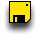

|
create new PC Click on this Toolbaritem to start the Dialog to create a new guest PC. |
||
| edit PC Click on this Toolbaritem to start the Dialog to edit a existing guest PC. | ||
| start PC Click on this Toolbaritem to start a existing guest PC. | ||
| remove PC Click on this Toolbaritem to remove a existing guest PC. The PC will be removed permanently. There is no "undo" function for this. |
|
Importfilter for VirtualPC This filter will convert VirtualPC guests with non growing disk-iamges. Please make sure to de-install any VirtualPC related Drivers and tools in advance and shutdown the guest. |
||
| Importfilter for QemuX This filter will import all of your QemuX guests. |
|  |
change Floppy disk-image of floppy disk drive A You can eject and load diskimages by clicking this icon. |
|
|
change Floppy disk-image of floppy disk drive B You can eject and load diskimages by clicking this icon. |
||
|
change CD-ROM or CD-ROM disk-image. You can eject and load diskimages by clicking this icon. |
||
| reset PC Your PC is stuck? Click this icon to do a hard-reset. | ||
| shutdown PC Powerbutton of your guest PC. You can opt to save the PC in it's current state to continueat this point at a later time. | ||
| screenshot Take a screenshot of the content of the guests PCs screen. |
|
CPU Usage Show the CPU Usage of the guest PC. This is for debuging purpose. Not for fulltime use intended :). |
||
| pause guest PC Halt/Start guest PC. | ||
| send ctrl-alt-del Your PC is stuck? Click this icon to do a soft-reset. Also used by windows login. |